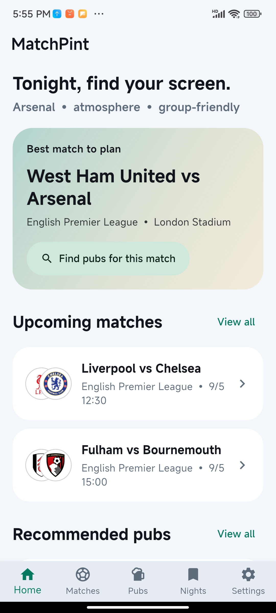
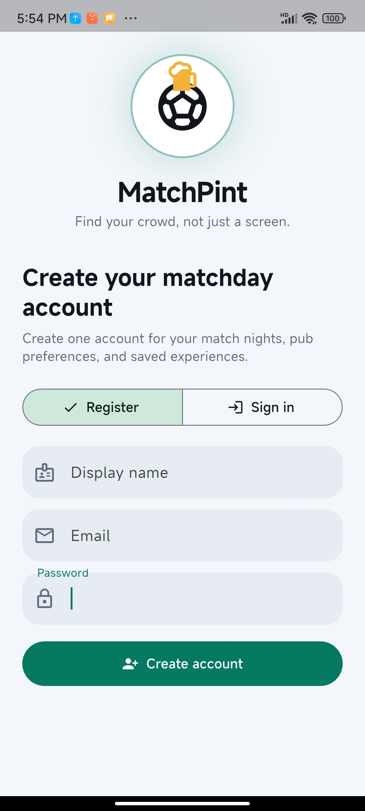
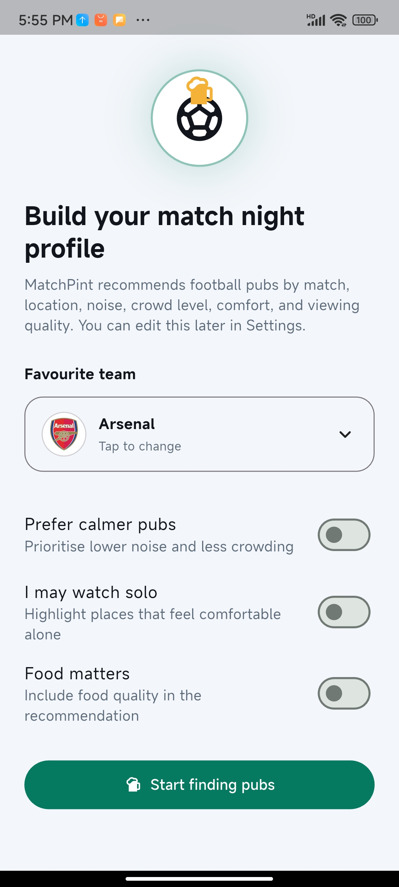
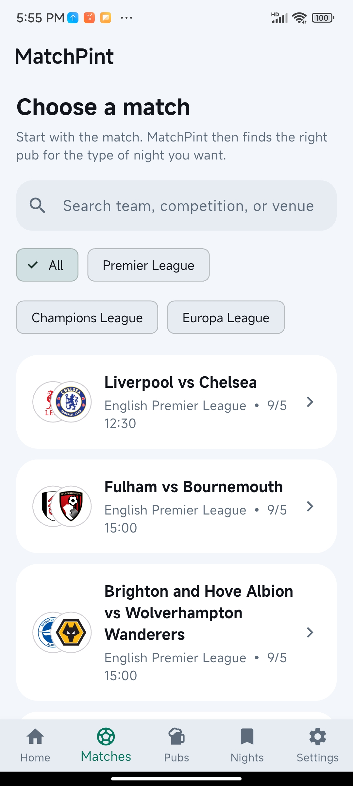
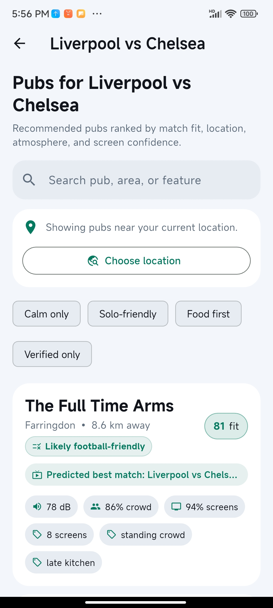
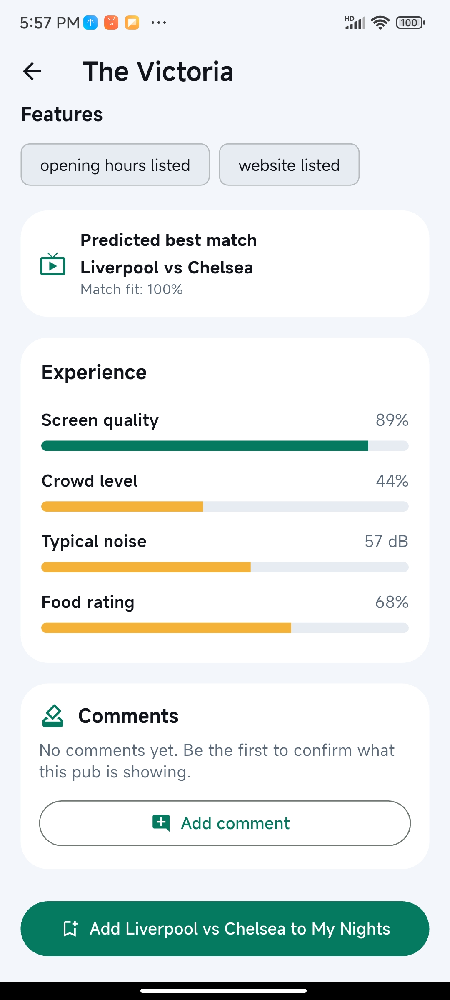
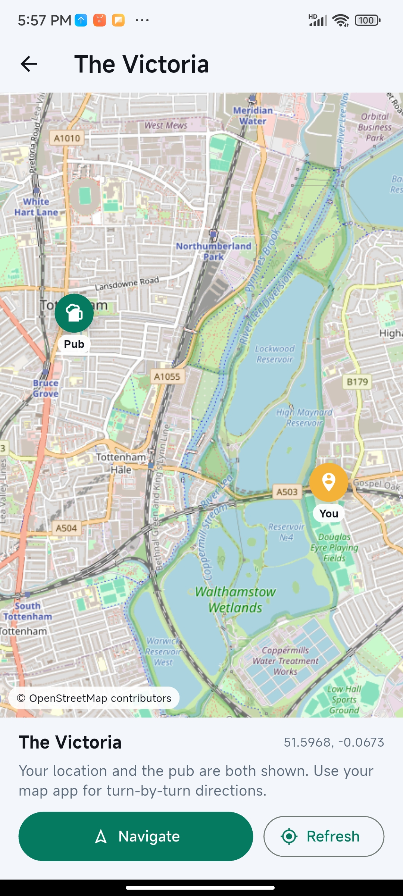
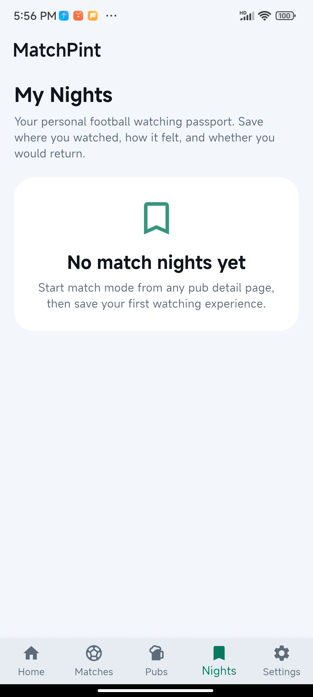
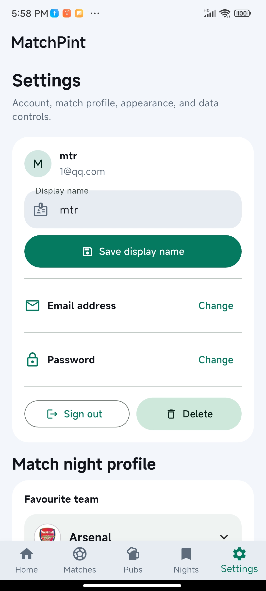

MatchPint helps football fans choose the right pub for the right match, based on location, atmosphere, crowd level, screen suitability, solo comfort and match relevance.

Start with the match, then discover venues that match the tone of the night.
Use current location or choose an area to compare nearby football-friendly pubs.
Every saved pub and fixture becomes part of the user’s personal football watching history.
These screenshots show the submitted MatchPint flow from account entry and onboarding through fixture discovery, pub search, map support, match-night recording and settings.








MatchPint connects mobile users with real urban social spaces. It links football fixtures, phone location, pub data, maps and lightweight experience feedback to support match-day decisions in the physical city.